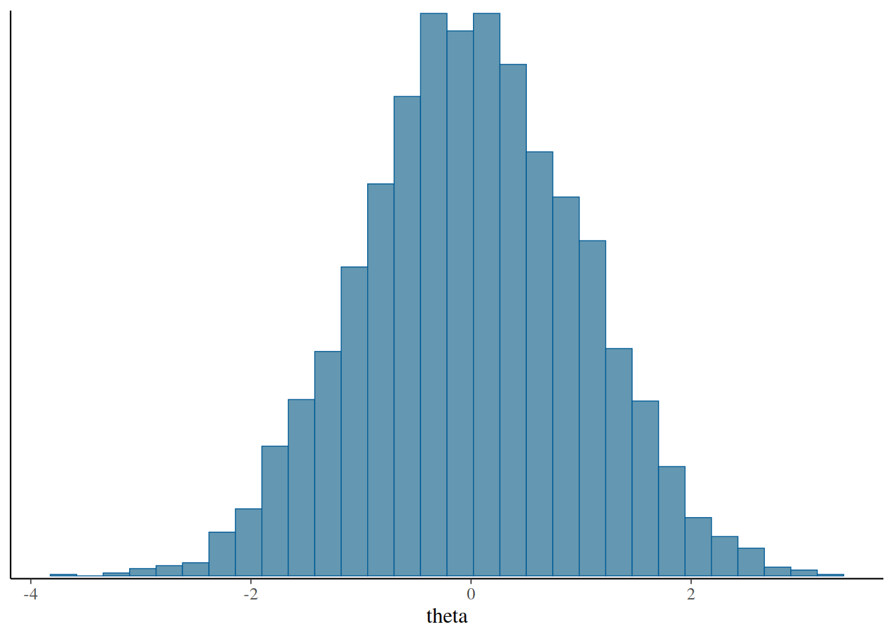

library(stanflow)
#> ── Attaching Stan processing packages ──────────────────────── stanflow 0.1.0 ──
#> ✔ bayesplot 1.15.0 ✔ projpred 2.10.0
#> ✔ loo 2.9.0 ✔ shinystan 2.7.0
#> ✔ posterior 1.6.1
#> ── Available Stan interfaces ────────────────────────────── setup_interface() ──
#> • brms 2.23.0 • rstan 2.32.7
#> • cmdstanr 0.9.0 • rstanarm 2.32.2
#> ── Conflicts ─────────────────────────────────────────── stanflow_conflicts() ──
#> ✖ posterior::rhat() masks bayesplot::rhat()
#> ℹ Use the conflicted package (<http://conflicted.r-lib.org/>) to force all conflicts to become errors
stan_logo()
#> G08GLG80G
#> G80LLLLLLLLL08G
#> G08GLLLLLLLLLLLLLLLG80G
#> G80LLLLLLLLLLLLLLCG08@@@@@@8G
#> 8LLLLLLLLLLLC8@@@@@@@@@@@@@@@@@
#> 8LLLLLLLLL8@@@@@@@@@@@@@@800GC8
#> 8LLLLLLLL8@@@@80GCLLLLLLLLLLLL8
#> 8LLLLLLLGtiiiitfLLLLLLLLLLLLLL8
#> 8LLLLLLLfiiiiiiiii1fLLLLLLLLLL8
#> 8LLLLLLLLLLLLftiiiiiifLLLLLLLL8
#> 8LLLLLLLLLLLLLLLLLLLGLLLLLLLLL8
#> 8LLLLLLLLLLLLLG0@@0CLLLLLLLLLL8
#> 8LLLLCG0880GCLLLLLLLLLLLLLLLLL8
#> G80LLLLLLLLLLLLLLLLLLLLGCG08G
#> G08GLLLLLLLLLLLLCGCG80G
#> G80LLLLLLLCL08G
#> G08GLG80Gstanflow is a lightweight metapackage that sets up a Stan-based Bayesian workflow. It attaches a core toolkit for model analysis (posterior, loo, projpred, bayesplot, shinystan) and helps you install/configure Stan interfaces (cmdstanr, rstan, brms, rstanarm).
Attach stanflow
Startup messages list attached packages and any namespace clashes. You can re-print that status later with flow_check(), or just the namespace conflicts with stanflow_conflicts().
flow_check()
#> ── Attaching Stan processing packages ──────────────────────── stanflow 0.1.0 ──
#> ✔ bayesplot 1.15.0 ✔ projpred 2.10.0
#> ✔ loo 2.9.0 ✔ shinystan 2.7.0
#> ✔ posterior 1.6.1
#> ── Available Stan interfaces ────────────────────────────── setup_interface() ──
#> • brms 2.23.0 • rstan 2.32.7
#> • cmdstanr 0.9.0 • rstanarm 2.32.2
#> ── Conflicts ─────────────────────────────────────────── stanflow_conflicts() ──
#> ✖ posterior::rhat() masks bayesplot::rhat()
#> ℹ Use the conflicted package (<http://conflicted.r-lib.org/>) to force all conflicts to become errors
stanflow_conflicts()
#> ── Conflicts ─────────────────────────────────────────── stanflow_conflicts() ──
#> ✖ posterior::rhat() masks bayesplot::rhat()
#> ℹ Use the conflicted package (<http://conflicted.r-lib.org/>) to force all conflicts to become errorsKeep the flow fresh
Check whether your Stan workflow packages are up to date (stable releases by default, or dev builds with dev = TRUE). Set recursive to check the full dependency closure.
stanflow_update(recursive = TRUE)You can also check if stanflow’s direct dependencies are up to date using flow_check().
flow_check(check_updates = TRUE)
#> ── Attaching Stan processing packages ──────────────────────── stanflow 0.1.0 ──
#> ✔ bayesplot 1.15.0 ✔ projpred 2.10.0
#> ✔ loo 2.9.0 ✔ shinystan 2.7.0
#> ✔ posterior 1.6.1
#> ── Available Stan interfaces ────────────────────────────── setup_interface() ──
#> • brms 2.23.0 • rstan 2.32.7
#> • cmdstanr 0.9.0 • rstanarm 2.32.2
#> ── Conflicts ─────────────────────────────────────────── stanflow_conflicts() ──
#> ✖ posterior::rhat() masks bayesplot::rhat()
#> ℹ Use the conflicted package (<http://conflicted.r-lib.org/>) to force all conflicts to become errors
#> ── Available updates ────────────────────────────────────── stanflow_update() ──
#> ✔ All stanflow packages up-to-dateChoose interface backends
Use setup_interface() to install (if needed), attach, and configure interfaces. This example prefers the cmdstanr backend for brms. Running this command will attach both packages and ensure that brms calls rely on cmdstanr by default.
setup_interface(
interface = "brms",
brms_backend = "cmdstanr",
cores = 2,
quiet = TRUE, # only silences R output
force = TRUE # only required for non-interactive usage
)
#> * Latest CmdStan release is v2.38.0
#> * Installing CmdStan v2.38.0 in /home/runner/.cmdstan/cmdstan-2.38.0
#> * Downloading cmdstan-2.38.0.tar.gz from GitHub...
#> * Download complete
#> * Unpacking archive...
#> * Building CmdStan binaries...
#> ar: creating stan/lib/stan_math/lib/sundials_6.1.1/lib/libsundials_nvecserial.a
#> ar: creating stan/lib/stan_math/lib/sundials_6.1.1/lib/libsundials_cvodes.a
#> ar: creating stan/lib/stan_math/lib/sundials_6.1.1/lib/libsundials_kinsol.a
#> ar: creating stan/lib/stan_math/lib/sundials_6.1.1/lib/libsundials_idas.a
#> /home/runner/.cmdstan/cmdstan-2.38.0/stan/lib/stan_math/lib/tbb_2020.3/build/Makefile.tbb:28: CONFIG: cfg=release arch=intel64 compiler=gcc target=linux runtime=cc13.3.0_libc2.39_kernel6.11.0
#> In file included from ../tbb_2020.3/src/tbb/concurrent_hash_map.cpp:17:
#> ../tbb_2020.3/include/tbb/concurrent_hash_map.h:347:23: warning: ‘template<class _Category, class _Tp, class _Distance, class _Pointer, class _Reference> struct std::iterator’ is deprecated [-Wdeprecated-declarations]
#> 347 | : public std::iterator<std::forward_iterator_tag,Value>
#> | ^~~~~~~~
#> In file included from /usr/include/c++/13/bits/stl_construct.h:61,
#> from /usr/include/c++/13/bits/stl_tempbuf.h:61,
#> from /usr/include/c++/13/memory:66,
#> from ../tbb_2020.3/include/tbb/tbb_stddef.h:452,
#> from ../tbb_2020.3/include/tbb/concurrent_hash_map.h:23:
#> /usr/include/c++/13/bits/stl_iterator_base_types.h:127:34: note: declared here
#> 127 | struct _GLIBCXX17_DEPRECATED iterator
#> | ^~~~~~~~
#> cc1plus: note: unrecognized command-line option ‘-Wno-unknown-warning-option’ may have been intended to silence earlier diagnostics
#> In file included from ../tbb_2020.3/src/tbb/concurrent_queue.cpp:22:
#> ../tbb_2020.3/include/tbb/internal/_concurrent_queue_impl.h:749:21: warning: ‘template<class _Category, class _Tp, class _Distance, class _Pointer, class _Reference> struct std::iterator’ is deprecated [-Wdeprecated-declarations]
#> 749 | public std::iterator<std::forward_iterator_tag,Value> {
#> | ^~~~~~~~
#> In file included from /usr/include/c++/13/bits/stl_construct.h:61,
#> from /usr/include/c++/13/bits/stl_tempbuf.h:61,
#> from /usr/include/c++/13/memory:66,
#> from ../tbb_2020.3/include/tbb/tbb_stddef.h:452,
#> from ../tbb_2020.3/src/tbb/concurrent_queue.cpp:17:
#> /usr/include/c++/13/bits/stl_iterator_base_types.h:127:34: note: declared here
#> 127 | struct _GLIBCXX17_DEPRECATED iterator
#> | ^~~~~~~~
#> ../tbb_2020.3/include/tbb/internal/_concurrent_queue_impl.h:1013:21: warning: ‘template<class _Category, class _Tp, class _Distance, class _Pointer, class _Reference> struct std::iterator’ is deprecated [-Wdeprecated-declarations]
#> 1013 | public std::iterator<std::forward_iterator_tag,Value> {
#> | ^~~~~~~~
#> /usr/include/c++/13/bits/stl_iterator_base_types.h:127:34: note: declared here
#> 127 | struct _GLIBCXX17_DEPRECATED iterator
#> | ^~~~~~~~
#> cc1plus: note: unrecognized command-line option ‘-Wno-unknown-warning-option’ may have been intended to silence earlier diagnostics
#> * Finished installing CmdStan to /home/runner/.cmdstan/cmdstan-2.38.0
#> CmdStan path set to: /home/runner/.cmdstan/cmdstan-2.38.0
flow_check()
#> ── Attaching Stan processing packages ──────────────────────── stanflow 0.1.0 ──
#> ✔ bayesplot 1.15.0 ✔ projpred 2.10.0
#> ✔ loo 2.9.0 ✔ shinystan 2.7.0
#> ✔ posterior 1.6.1
#> ── Available Stan interfaces ────────────────────────────── setup_interface() ──
#> ✔ brms 2.23.0 • rstan 2.32.7
#> ✔ cmdstanr 0.9.0 • rstanarm 2.32.2
#> ── Conflicts ─────────────────────────────────────────── stanflow_conflicts() ──
#> ✖ brms::ar() masks stats::ar()
#> ✖ brms::do_call() masks projpred::do_call()
#> ✖ brms::rhat() masks posterior::rhat(), bayesplot::rhat()
#> ℹ Use the conflicted package (<http://conflicted.r-lib.org/>) to force all conflicts to become errorsIf you prefer RStan, you could load it alongside brms.
setup_interface(
interface = c("rstan", "brms"),
cores = 2,
quiet = TRUE
)You can setup as many interfaces you’d like:
setup_interface(
interface = c("rstan", "rstanarm", "brms", "cmdstanr"),
brms_backend = "cmdstanr",
cores = 2,
quiet = TRUE
)A tiny workflow
With the core packages attached, you can generate, summarise, and visualise draws immediately.
set.seed(0)
draws <- as_draws_df(
matrix(rnorm(4000), ncol = 1, dimnames = list(NULL, "theta"))
)
summarise_draws(draws, mean, sd, rhat, ess_bulk)
#> # A tibble: 1 × 5
#> variable mean sd rhat ess_bulk
#> <chr> <dbl> <dbl> <dbl> <dbl>
#> 1 theta 0.00750 0.990 1.00 4038.
mcmc_hist(draws, pars = "theta")
#> `stat_bin()` using `bins = 30`. Pick better value `binwidth`.
log_lik <- matrix(rnorm(4000 * 10, -1, 0.2), ncol = 10)
loo(log_lik)
#>
#> Computed from 4000 by 10 log-likelihood matrix.
#>
#> Estimate SE
#> elpd_loo -10.2 0.0
#> p_loo 0.4 0.0
#> looic 20.4 0.0
#> ------
#> MCSE of elpd_loo is 0.0.
#> MCSE and ESS estimates assume independent draws (r_eff=1).
#>
#> All Pareto k estimates are good (k < 0.7).
#> See help('pareto-k-diagnostic') for details.Painless citations
Once you’ve finished your analysis and need to cite the Stan software you used, simply run stan_cite() on your project/files to quickly generate an appropriate BibTeX or bibentry.
start <- Sys.time()
citations <- stan_cite("stanflow.qmd")
#> ℹ Searching '/home/runner/work/stanflow/stanflow/vignettes/stanflow.qmd'
Sys.time() - start
#> Time difference of 0.1377647 secs
citations
#> @Manual{bayesplot,
#> title = {Plotting for Bayesian Models},
#> author = {Jonah Gabry and Tristan Mahr},
#> year = {2025},
#> note = {R package version 1.15.0, https://discourse.mc-stan.org},
#> url = {https://mc-stan.org/bayesplot/},
#> }
#>
#> @Article{bayesplot-2019,
#> title = {Visualization in Bayesian workflow},
#> author = {Jonah Gabry and Daniel Simpson and Aki Vehtari and Michael Betancourt and Andrew Gelman},
#> year = {2019},
#> journal = {J. R. Stat. Soc. A},
#> volume = {182},
#> issue = {2},
#> pages = {389-402},
#> doi = {10.1111/rssa.12378},
#> }
#>
#> @Manual{loo,
#> title = {Efficient Leave-One-Out Cross-Validation and WAIC for Bayesian
#> Models},
#> author = {Aki Vehtari and Jonah Gabry and Måns Magnusson and Yuling Yao and Paul-Christian Bürkner and Topi Paananen and Andrew Gelman},
#> year = {2025},
#> note = {R package version 2.9.0, https://discourse.mc-stan.org},
#> url = {https://mc-stan.org/loo/},
#> }
#>
#> @Manual{posterior,
#> title = {Tools for Working with Posterior Distributions},
#> author = {Paul-Christian Bürkner and Jonah Gabry and Matthew Kay and Aki Vehtari},
#> year = {2025},
#> note = {R package version 1.6.1, https://discourse.mc-stan.org},
#> url = {https://mc-stan.org/posterior/},
#> }
#>
#> @Article{rhat-2021,
#> title = {Rank-normalization, folding, and localization: An improved Rhat for assessing convergence of MCMC (with discussion)},
#> author = {Aki Vehtari and Andrew Gelman and Daniel Simpson and Bob Carpenter and Paul-Christian B\"urkner},
#> journal = {Bayesian Analysis},
#> year = {2021},
#> volume = {16},
#> number = {2},
#> pages = {667-718},
#> }
#>
#> @Manual{projpred,
#> title = {Projection Predictive Feature Selection},
#> author = {Juho Piironen and Markus Paasiniemi and Alejandro Catalina and Frank Weber and Osvaldo Martin and Aki Vehtari},
#> year = {2025},
#> note = {R package version 2.10.0, https://discourse.mc-stan.org},
#> url = {https://mc-stan.org/projpred/},
#> }
#>
#> @Manual{shinystan,
#> title = {Interactive Visual and Numerical Diagnostics and Posterior
#> Analysis for Bayesian Models},
#> author = {Jonah Gabry and Duco Veen},
#> year = {2025},
#> note = {R package version 2.7.0, https://discourse.mc-stan.org},
#> url = {https://mc-stan.org/shinystan/},
#> }
#>
#> @Manual{stanflow,
#> title = {A Mildly Opinionated Stan Bayesian Workflow},
#> author = {Visruth {Srimath Kandali}},
#> year = {2026},
#> note = {R package version 0.1.0, https://discourse.mc-stan.org},
#> url = {https://mc-stan.org/stanflow/},
#> }
#>
#> @Article{vehtari-2017-loo,
#> title = {Practical Bayesian model evaluation using leave-one-out cross-validation and WAIC},
#> author = {Aki Vehtari and Andrew Gelman and Jonah Gabry},
#> journal = {Statistics and Computing},
#> year = {2017},
#> volume = {27},
#> number = {5},
#> pages = {1413--1432},
#> doi = {10.1007/s11222-016-9696-4},
#> note = {arXiv preprint: https://arxiv.org/abs/1507.04544},
#> }
#>
#> @Article{vehtari-2024-psis,
#> title = {Pareto smoothed importance sampling},
#> author = {Aki Vehtari and Daniel Simpson and Andrew Gelman and Yuling Yao and Jonah Gabry},
#> journal = {Journal of Machine Learning Research},
#> year = {2024},
#> volume = {25},
#> number = {72},
#> pages = {1--58},
#> url = {https://jmlr.org/papers/v25/19-556.html},
#> }
#>
#> @Manual{,
#> title = {R: A Language and Environment for Statistical Computing},
#> author = {{R Core Team}},
#> organization = {R Foundation for Statistical Computing},
#> address = {Vienna, Austria},
#> year = {2025},
#> url = {https://www.R-project.org/},
#> }